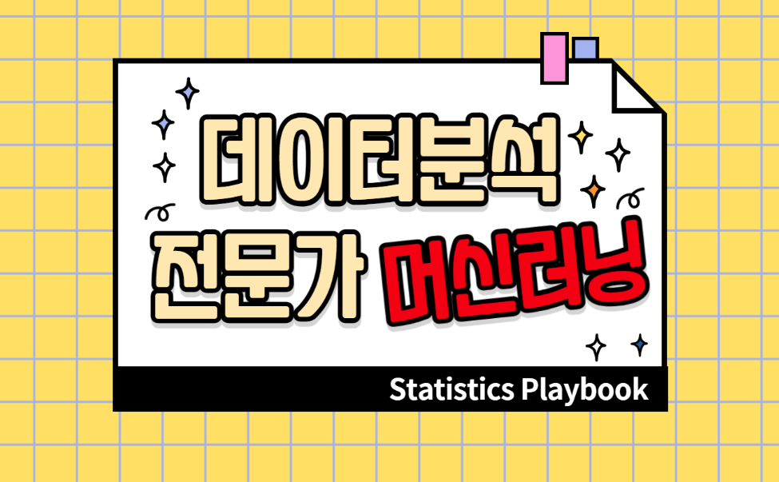

RMySQL, DBI 패키지를 활용하여 R과 MySQL 연동하기
reticulate vscode 세팅
mac m1 pro에 MySQL 설치하기
R 패키지 logo 만들기
sensemakr 패키지 소개 및 간단한 논문 리뷰
glm.fit: fitted probabilities numerically 0 or 1 occurred
GLM에서 다중공선성 체크 해야 하는지
vscode에서 quarto와 파이썬 사용하기
Quarto로 블로그 만들기 튜토리얼
Introduction to rocker
Introduction to packrat, renv
feature importance, partial dependence plot, shap value 소개
kernel density estimation 소개
Multiple test에 대한 소개
ADMM example code
tidymodels를 이용한 시계열 모델링
tidymodels에 대한 간단한 소개
gradient boosting machine 소개
Introduction to MCMC